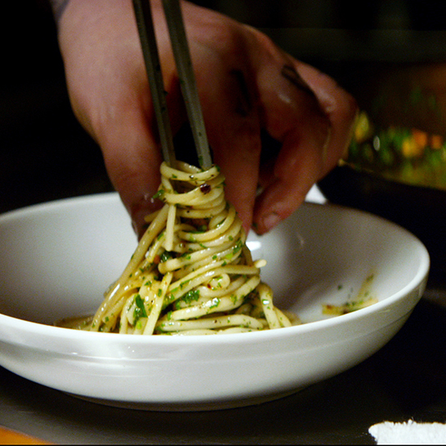

Aglio e Olio Recipe

About This Recipe
The movie Chef is seen by many as not just a feel-good movie, but also a fun, motivating, and entertaining film full of great ideas for aspiring at-home chefs!
From one of that movie's iconic scenes comes this easy yet delicious pasta dish, Aglio e Olio.
Very few scents in the kitchen compare to the aroma of garlic cooking in olive oil and this recipe uses a lot of both! (You're welcome)
Take a step into the world of easy, yet delicious, at-home cooking with this Italian classic that is guaranteed to impress your friends and/or your significant other.
This recipe follows close instruction of one of my favorite YouTube cooking channels, Babish Culinary Universe (formally known as Binging with Babish). An instructional video can be found here.
If you enjoy this recipe, or enjoy cooking and want to become a better cook at home. I heavily recommend visiting his channel and exploring his content.
All that aside, let's get to cooking!
Ingredients
- 1/2 head garlic, separated and peeled
- 1/2 cup flat-leaf parsley, rinsed and finely chopped
- 1/2 cup good quality olive oil
- 1 tsp red pepper flakes
- 1/2 pound dry linguine
- 1/2 lemon
- Salt and pepper to taste
Steps
- Heavily salt a large pot of water, and bring to a boil. Cook pasta until slightly underdone while completing the steps below.
- Slice the garlic cloves thinly, and set aside. Heat olive oil in a large sauté pan over medium heat until barely shimmering. Add sliced garlic, stirring constantly, until softened and turning golden on the edges. Add the red pepper flakes and lower the heat to medium-low.
- Add the pasta, drained, with about 1/4 cup reserved pasta cooking water. Squeeze lemon juice over top, and mix into the pasta with the fresh parsley. If sauce is too watery, continue to cook for 1-3 minutes, until pasta has absorbed more liquid. Season with salt and pepper, and serve.
- Enjoy!!